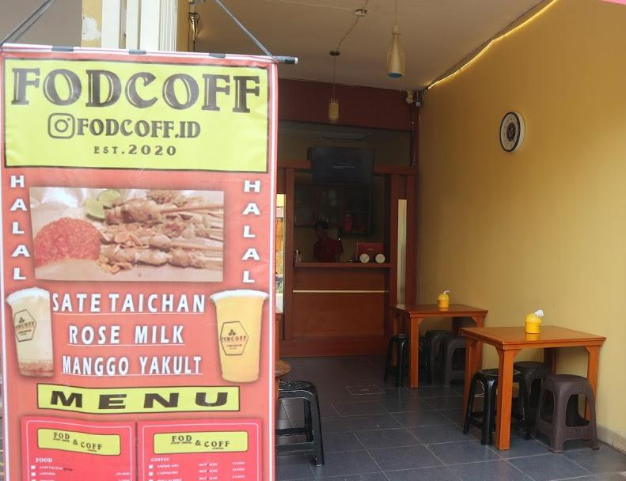

Selamat Datang di website Kafe FODCOFF.ID, sebuah UMKM di bidang pangan. Kami menyediakan aneka makanan, minuman, dan coffe. Kami menerima layanan pemesanan. Kami juga menawarkan promosi terhadap beberapa menu yang harganya terjangkau bagi Anda! Silakan cek bagian promosi untuk melihat potongan harga beberapa menu kami.
Kafe FODCOFF.ID merupakan UMKM yang didirikan pada tanggal 28 Agustus 2018. Kafe ini, setiap hari bisa melayani pesanan antara 200 hingga 500 pcs. Hingga saat ini, Kafe FODCOFF.ID telah kebanjiran pesanan! Ayo, silakan mencoba rasa mewahnya!
Lokasi : Jl. Metland, Metland cileungsi blok ab 15 no 04 , Rt 04 Rw 02, Kabupaten Bogor, Jawa Barat 16820, Indonesia
| Lokasi Kafe Cabang |
|---|
| Jakarta : Jl. TB Simatupang No.42, RT.14/RW.6, Cilandak Barat, Kec. Cilandak, Kota Jakarta Selatan, Daerah Khusus Ibukota Jakarta 12430 |
| Depok : Jl. Raya Sawangan 25-5, Rangkapan Jaya, Kec. Pancoran Mas, Kota Depok, Jawa Barat 16435 |
| Bekasi : Jl. Pemuda 27-5, RT.004/RW.014, Kranji, Kec. Bekasi Barat, Kota Bekasi, Jawa Barat 17135 |